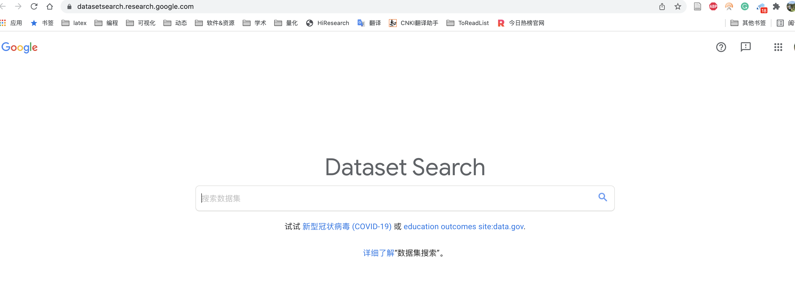
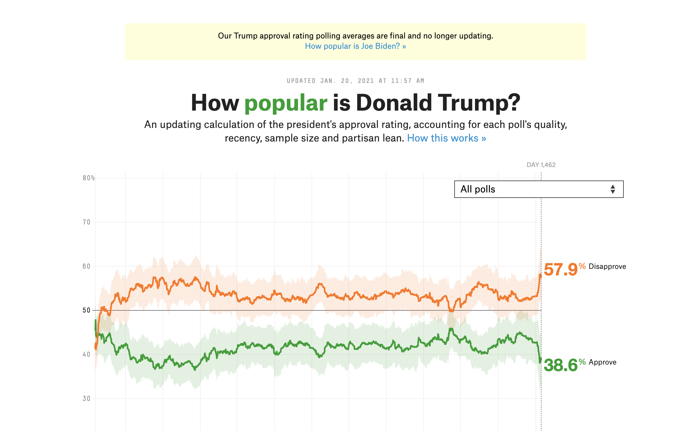
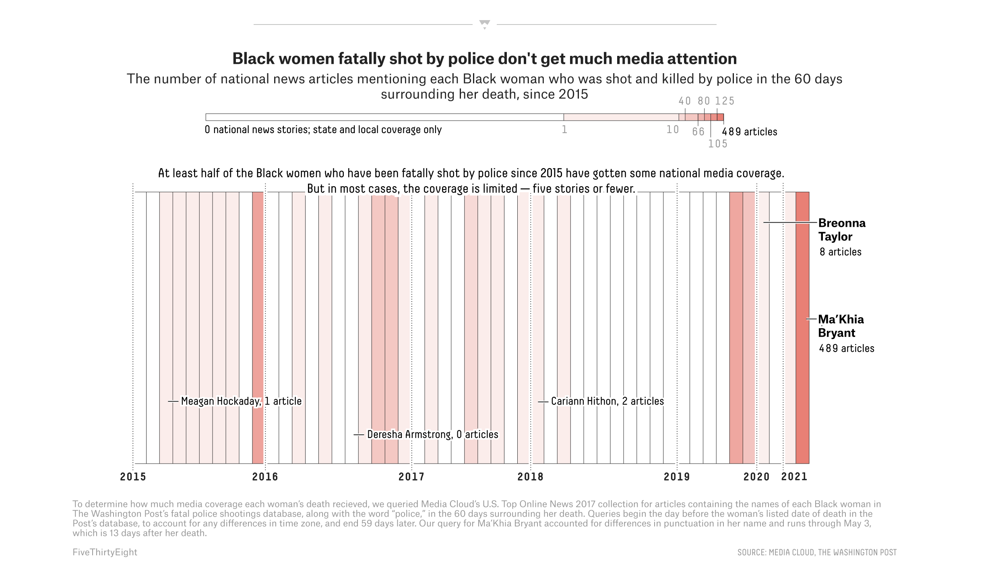
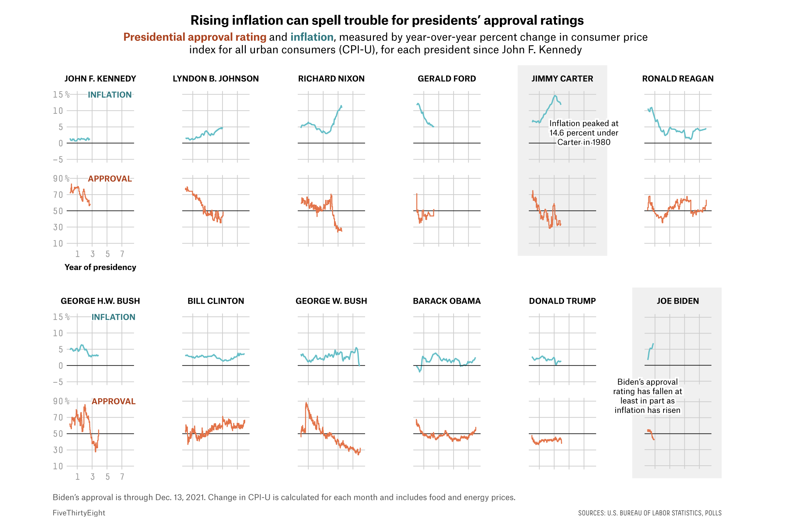
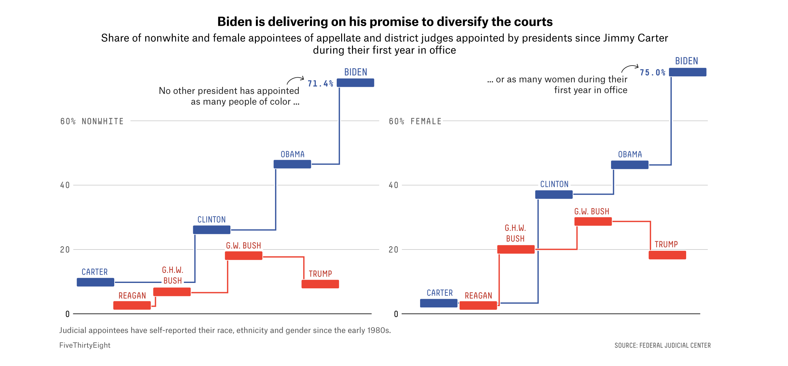
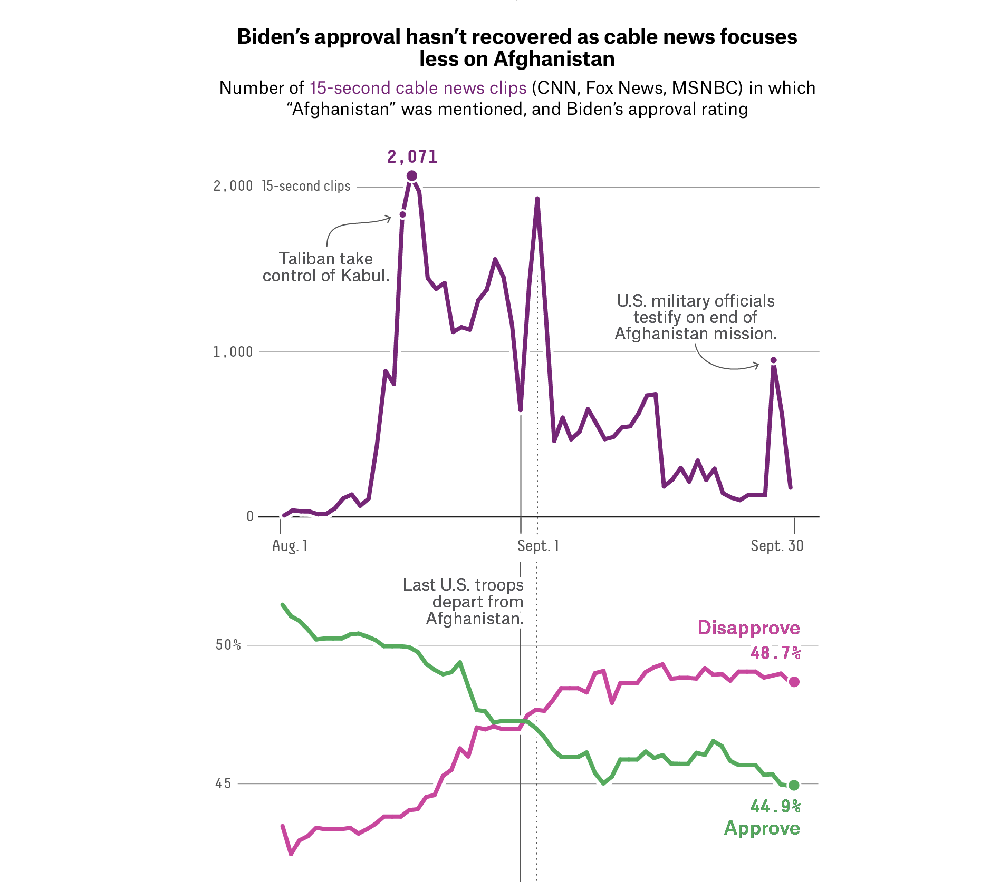

DatasetSearch
https://datasetsearch.research.google.com/
可以轻松地使用关键词搜索数据集。 此外，还可按日期，数据格式和使用权限等筛选条件过滤查询。

Kaggle 数据集
https://www.kaggle.com/datasets
Kaggle 是世界领先的平台，涉及所有数据科学相关的编程。允许用户查找和发布数据集，更具吸引力的是提供了其他人对该数据集的数据分析代码，可以通过案例化快速学习数据挖掘技术。
data.world
data.world是一个很少提及的集合。 它与Google数据集搜索引擎非常相似。
当输入关键词查询时，它不仅显示数据集，还显示所需数据的子文件。 当查找诸如人口统计信息和地理位置集合之类的辅助数据时，强烈建议您使用"数据世界"。
fivethirtyeight
著名数据分析网站名称538取自美国总统大选最后选举人团的538张选票，也就是决定总统选举结果的538票。
该github项目存放了538网站大量的数据及分析代码。下面是538风格的可视化案例
    
congress-legislators
https://github.com/unitedstates/congress-legislators
美国国会议员，1789 年至今，采用 YAML/JSON/CSV 格式，以及委员会、总统和副总统。
OpenAddresses
https://github.com/openaddresses/openaddresses
地址、地籍宗地和建筑足迹数据源的全球集合，开放且免费使用。
datasette
https://github.com/simonw/datasette
Datasette 是一个探索和发布数据的开源多功能工具。 可以帮助人们获取任何形状或大小的数据，并将其作为交互式、可探索的网站和随附的 API 发布。
主要面向数据记者、博物馆馆长、档案管理员、地方政府、科学家、研究人员以及任何拥有希望与世界分享数据的人。
Lektor
Lektor是一个静态网站生成器， 具有用于创建网站的**内容管理系统 (CMS) **和Web 框架功能。大多数静态站点生成器（例如Pelican、Hugo）都是以程序员为主要用户构建的。Lektor 试图通过提供类似于 Django 或 Wordpress 的管理面板来创建和更新站点内容，从而使非程序员更容易访问。